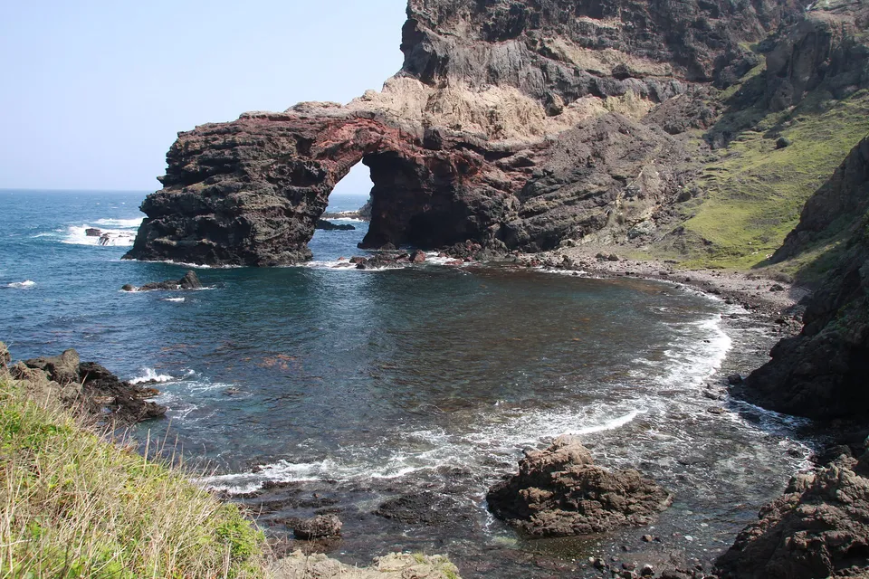
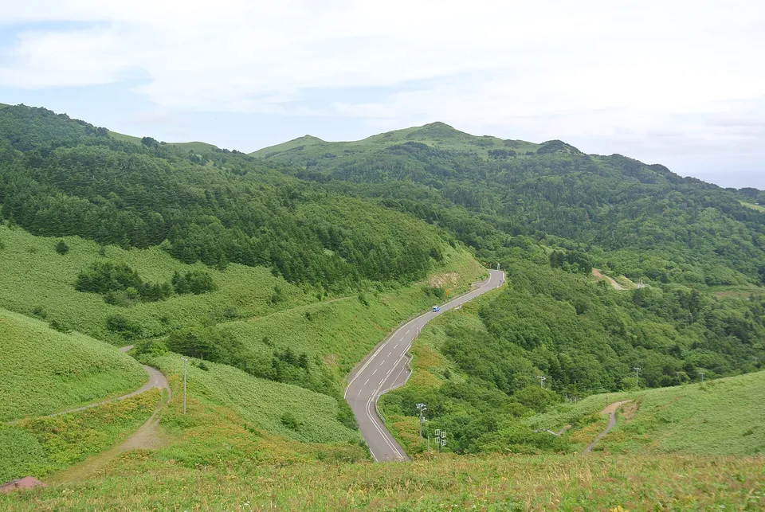
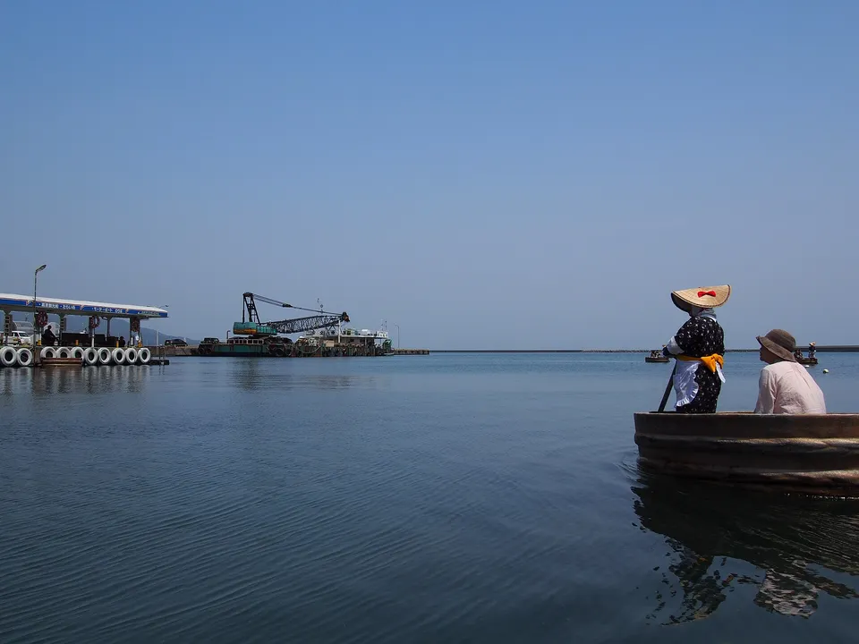
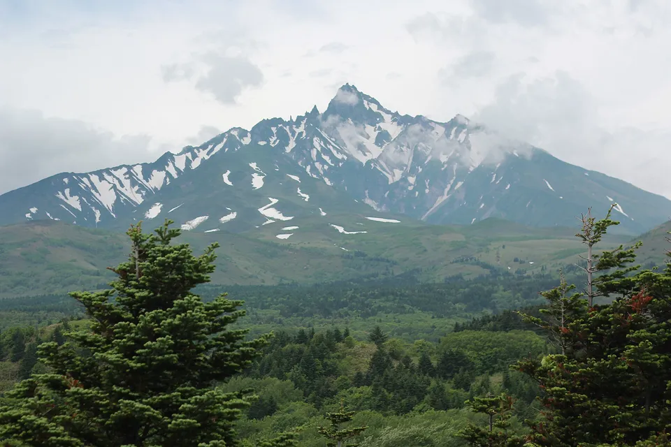
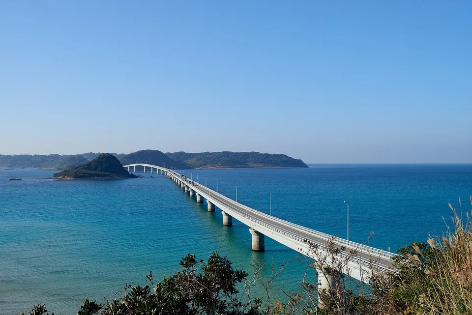
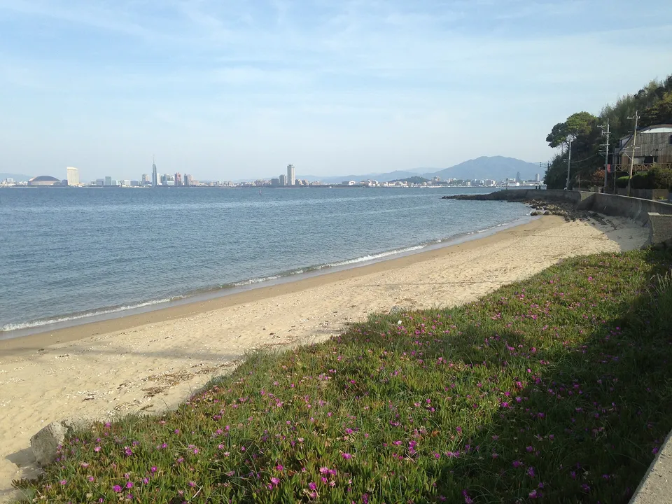
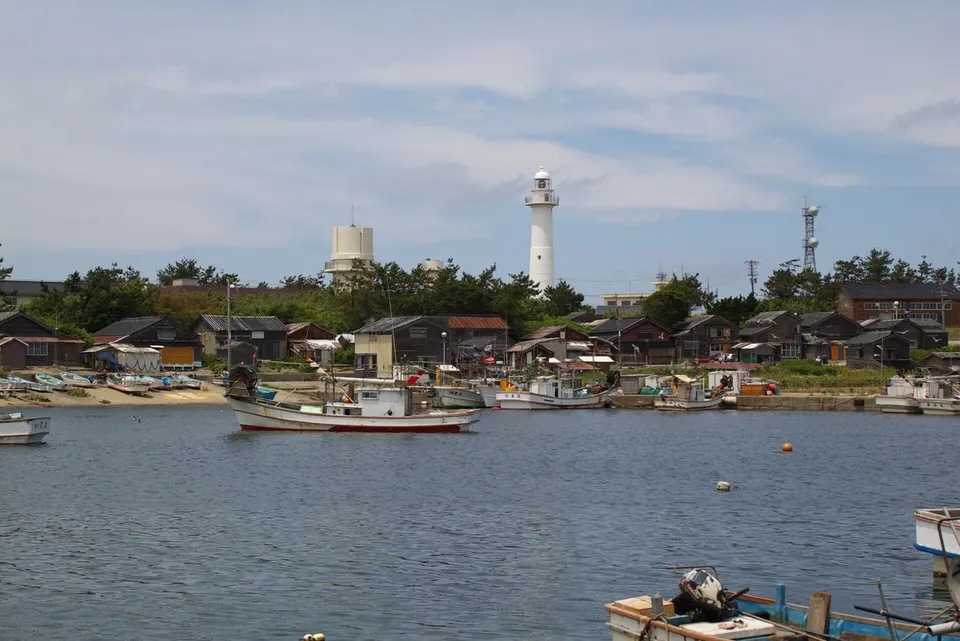

.jpg){kind=link}
The Sea of Japan coast has 38 inhabited islands between Hokkaido and Saga, and almost none of them are on the way to anywhere. Sado and the Oki are places of exile turned into places to go; Rebun and Rishiri are alpine islands you reach from Wakkanai in summer only; the rest are fishing villages that see one boat a day.
The Sea of Japan slice of our national island table — same source, same numbers, grouped by coast, with the boats and the season explained.



Photos: Tsūtenkyō arch on the Kuniga coast, Oki — Yuvalr via Wikimedia Commons, CC BY-SA 4.0 · Rebun Island, the northernmost inhabited island in Japan — Suicasmo via Wikimedia Commons, CC BY-SA 4.0 · Tub boats at Ogi, Sado — rhodnite via Wikimedia Commons, CC BY 2.0
{kind=link}
{kind=link}
{kind=link}
The cold side of the country
The Sea of Japan coast is long, cold in winter and thinly islanded — 38 inhabited islands from Hokkaido to Saga in the SHIMADAS roster, against 110 in the Seto Inland Sea alone. What it lacks in number it makes up in character: Sado and the Oki are places of exile with a thousand years of history, Rebun and Rishiri are alpine islands at sea level, and the small ones are fishing villages that see almost nobody.
This is the Sea of Japan slice of our table of every inhabited island in Japan: same source, same columns, grouped by coast. Iki and Tsushima face the same sea but belong to Nagasaki and are in that table.
The shape of it
Source: SHIMADAS (Japan Islands Center, 2019 edition), 2015 census and GSI figures.
The islands people go for
The Sea of Japan islands are far apart and each one is its own trip. These are the ones people go for.
Sado
Japan's biggest island after the main four and Okinawa's: 57,255 people, 856 km², gold mines (World Heritage since 2024), tub boats at Ogi, the crested ibis reintroduced to the wild. Jet-foil from Niigata in about 1 h 10 min.
The Oki Islands
Four inhabited islands 60–80 km off Shimane: Dōgo (14,608 people) and the three Dōzen islands — Nishinoshima with the Kuniga cliffs, Nakanoshima, Chiburijima (615). Exiled emperors, a UNESCO Global Geopark, ferries from Sakaiminato and Shichirui.

Rebun and Rishiri
Rishiri is a volcano in the sea (5,090 people); Rebun next to it (2,773) is the "flower island", the northernmost inhabited island in Japan. Ferries from Wakkanai; June to August is the season and everything else is closed.
{kind=link}

The bridged and the near
Tsunoshima (726) is the bridge photo everyone knows; Notojima (2,725) has the aquarium; Ōmijima at Nagato and Shikanoshima off Fukuoka are day trips by car or bus. Islands you can visit without a timetable.
.jpg){kind=link}

The Genkai fishing islands
Off Fukuoka and Saga: Nokonoshima (ten minutes from the city, 717 people), Ainoshima with its cats, Genkaijima, and the Saga islands — Kakarashima, Madarashima, Kabeshima — reached from Karatsu and Yobuko. Fresh squid, no hotels.
{kind=link}

The far ones
Hegurajima (105 people, 50 km off Wajima, ama divers and migrating birds), Mishima off Hagi (864), Awashima off Niigata (370), Tobishima off Yamagata (204) and Okushiri off Hokkaido. One boat a day or fewer, and it does not go in a north-westerly.
.jpg){kind=link}
The table: all 38
Every inhabited island on Japan's Sea of Japan and Genkai coasts in the roster, from Rebun in the far north to the Saga fishing islands. Sort by people or size, or type a name.
| Island | Prefecture · group | People ▾ | km² ▾ | Read more |
|---|---|---|---|---|
| Rishiri Island利尻島 | HokkaidoNorth (Hokkaido) | 5,090 | 182 | Wikipedia |
| Rebun Island礼文島 | HokkaidoNorth (Hokkaido) | 2,773 | 82 | Wikipedia |
| Okushiri Island奥尻島 | HokkaidoNorth (Hokkaido) | 2,690 | 143 | Wikipedia |
| Teuri Island天売島 | HokkaidoNorth (Hokkaido) | 313 | 5.47 | Wikipedia |
| Yagishiri Island焼尻島 | HokkaidoNorth (Hokkaido) | 201 | 5.19 | Wikipedia |
| Murotsujima室津島 | HokkaidoNorth (Hokkaido) | 8 | 0.30 | |
| Sado Island佐渡島 | NiigataSado & the Tōhoku–Hokuriku coast | 57,255 | 856 | Wikipedia |
| Notojima能登島 | IshikawaSado & the Tōhoku–Hokuriku coast | 2,725 | 47 | Wikipedia |
| Awashima Island粟島 | NiigataSado & the Tōhoku–Hokuriku coast | 370 | 9.78 | Wikipedia |
| Tobishima飛島 | YamagataSado & the Tōhoku–Hokuriku coast | 204 | 2.75 | Wikipedia |
| Hegurajima舳倉島 | IshikawaSado & the Tōhoku–Hokuriku coast | 105 | 0.55 | Wikipedia |
| Dōgojima島後 | ShimaneOki | 14,608 | 243 | Wikipedia |
| Nishinoshima西ノ島 | ShimaneOki | 3,027 | 56 | Wikipedia |
| Nakanoshima中ノ島 | ShimaneOki | 2,400 | 33 | Wikipedia |
| Chiburijima知夫里島 | ShimaneOki | 615 | 14 | Wikipedia |
| Ōmijima青海島 | YamaguchiSan'in–Yamaguchi | 1,806 | 15 | Wikipedia |
| Mishima Island見島 | YamaguchiSan'in–Yamaguchi | 864 | 7.73 | Wikipedia |
| Tsunoshima角島 | YamaguchiSan'in–Yamaguchi | 726 | 3.96 | Wikipedia |
| Hitsushima櫃島 | YamaguchiSan'in–Yamaguchi | 677 | 3.00 | |
| Futaoijima蓋井島 | YamaguchiSan'in–Yamaguchi | 90 | 2.32 | |
| Mutsure Island六連島 | YamaguchiSan'in–Yamaguchi | 87 | 0.69 | Wikipedia |
| Shika Island志賀島 | FukuokaGenkai (Fukuoka & Saga) | 1,639 | 5.82 | Wikipedia |
| Nokonoshima能古島 | FukuokaGenkai (Fukuoka & Saga) | 717 | 3.95 | |
| Kabeshima加部島 | SagaGenkai (Fukuoka & Saga) | 533 | 2.72 | |
| Genkai Island玄界島 | FukuokaGenkai (Fukuoka & Saga) | 458 | 1.16 | Wikipedia |
| Ogawashima小川島 | SagaGenkai (Fukuoka & Saga) | 348 | 0.92 | |
| Madarashima馬渡島 | SagaGenkai (Fukuoka & Saga) | 347 | 4.24 | |
| Kashiwajima神集島 | SagaGenkai (Fukuoka & Saga) | 321 | 1.39 | |
| Ainoshima相島 | FukuokaGenkai (Fukuoka & Saga) | 267 | 1.22 | Wikipedia |
| Ainoshima藍島 | FukuokaGenkai (Fukuoka & Saga) | 243 | 0.68 | Wikipedia |
| Takashima高島 | SagaGenkai (Fukuoka & Saga) | 241 | 0.62 | |
| Oronoshima小呂島 | FukuokaGenkai (Fukuoka & Saga) | 192 | 0.43 | |
| Jinoshima地島 | FukuokaGenkai (Fukuoka & Saga) | 148 | 1.62 | |
| Himeshima姫島 | FukuokaGenkai (Fukuoka & Saga) | 147 | 0.75 | |
| Kakarajima加唐島 | SagaGenkai (Fukuoka & Saga) | 131 | 2.83 | Wikipedia |
| Mukushima向島 | SagaGenkai (Fukuoka & Saga) | 56 | 0.30 | |
| Matsushima松島 | SagaGenkai (Fukuoka & Saga) | 40 | 0.63 | |
| Umashima馬島 | FukuokaGenkai (Fukuoka & Saga) | 31 | 0.26 |
38 islands. Population and area are the figures printed in SHIMADAS (2019 edition; 2015 census and GSI). Iki and Tsushima, which also face this sea, are in the Nagasaki table.
The Japanese you'll actually use
Common questions
Which islands are in the Sea of Japan?
On the Japanese side, from north to south: Rebun, Rishiri, Yagishiri, Teuri and Okushiri off Hokkaido; Tobishima, Awashima and Sado off Tōhoku and Niigata; Notojima and Hegurajima off Ishikawa; the four Oki islands off Shimane; Mishima, Ōmijima, Tsunoshima and the small islands off Yamaguchi; and the Genkai islands off Fukuoka and Saga — 38 inhabited islands in this table, plus Iki and Tsushima under Nagasaki.
How do I get to Sado?
Jet-foil (about 1 h 10 min) or car ferry (about 2 h 30 min) from Niigata port to Ryōtsu; a second car ferry runs from Naoetsu to Ogi. Niigata is two hours from Tokyo by Shinkansen.
How do I get to the Oki Islands?
Ferry or fast boat from Shichirui (Matsue) or Sakaiminato — about 2 h 30 min by ferry, faster on the Rainbow Jet — or a short flight from Izumo or Osaka Itami to Oki Airport on Dōgo. Boats between the four islands connect them.
When can I visit Rebun and Rishiri?
June to early September. Ferries from Wakkanai run all year but lodgings, buses and the flower trails are seasonal, and winter sailings are often cancelled.
Are the population figures current?
They are the 2015 census as printed in the 2019 edition of SHIMADAS; every island here has fewer people now.
Read next
Sources: SHIMADAS (Japan Islands Center, 2019 edition) for the roster and figures (2015 census, GSI); only published figures are reproduced, no text. Which sea an island faces is our assignment by name; Ōnejima in Lake Nakaumi and the Pacific-side islands of the same prefectures are left out. English article links verified by prefecture; a blank means unverified. Photos are Creative Commons — credits under each image.